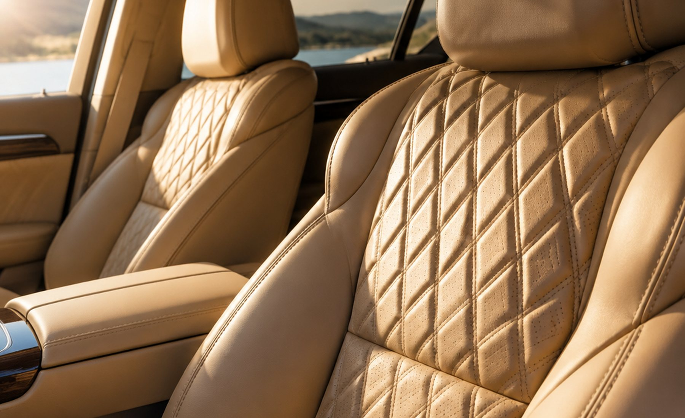
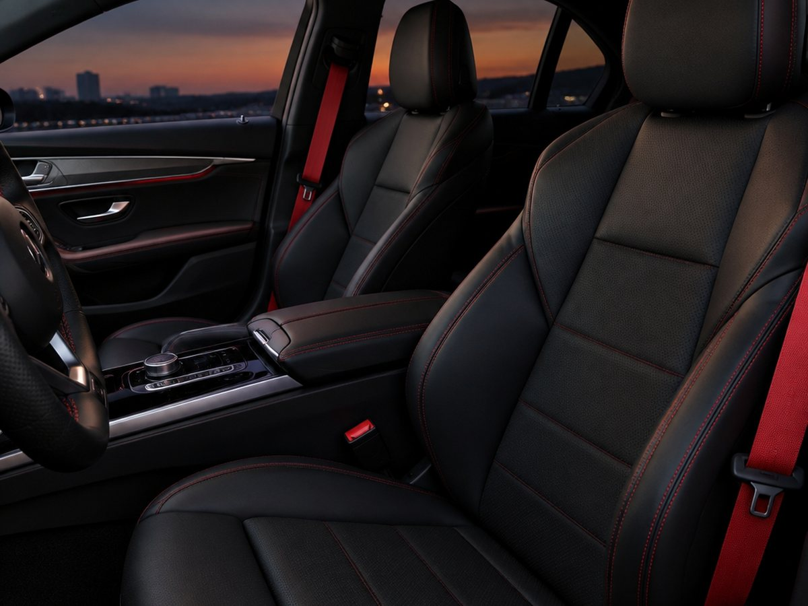
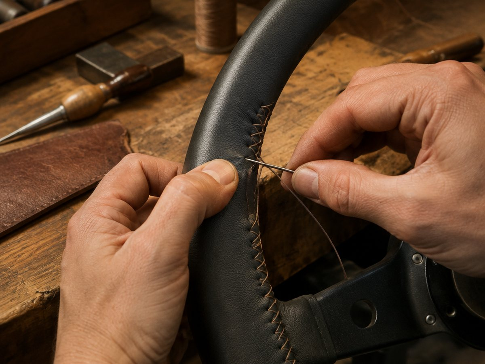
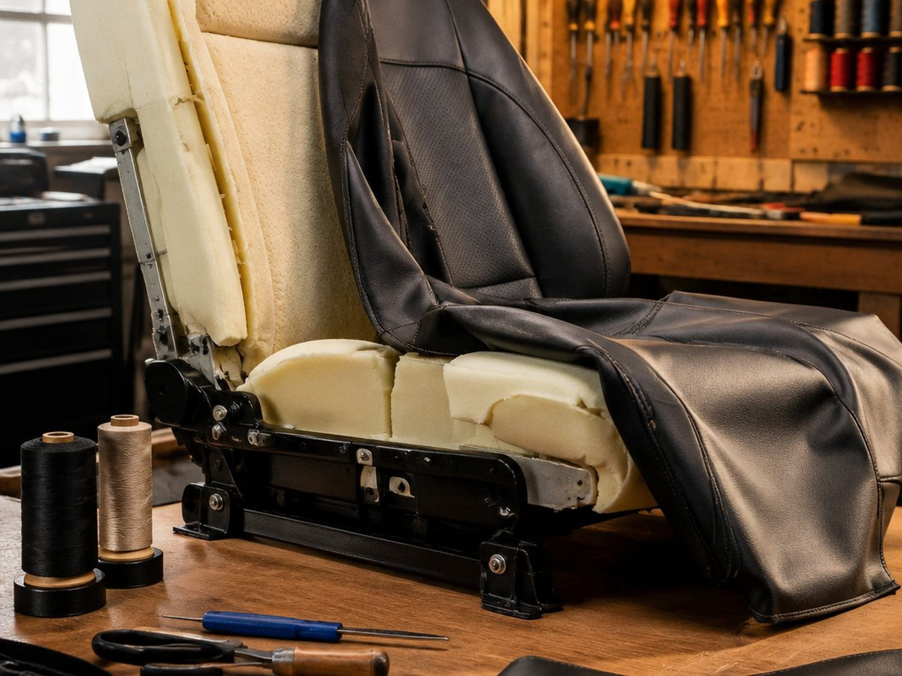
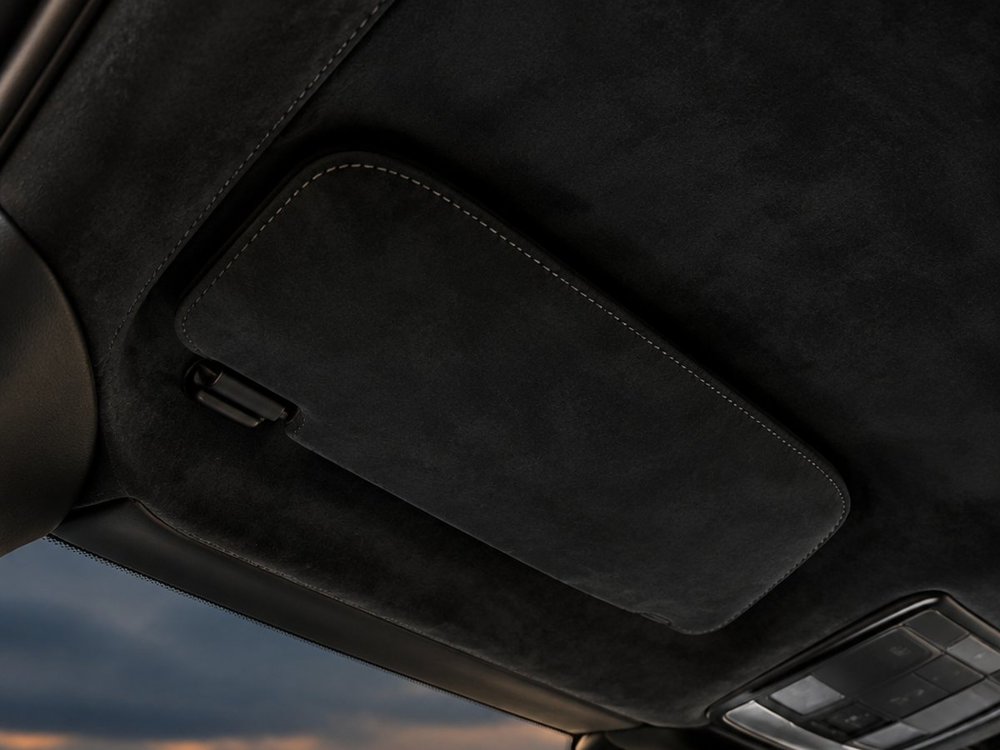
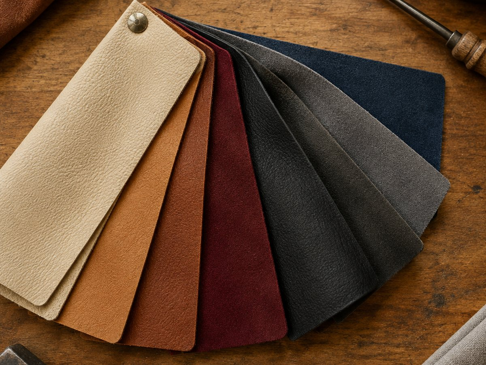

Салон, который выглядит дороже машины
Покраска кожи и пластика, полная перетяжка сидений, рули, потолки, ремонт поролона. Минск, Дзержинского проспект.
Что делаем
Восемь работ, из которых собирается салон
Берёмся и за одну деталь, и за машину целиком. Ниже честно написано, что решается покраской, а где нужна новая обивка.
Покраска кожи и пластика
Тонируем кожаные элементы и красим пластик после разборки. Это не «освежить», а полноценная покраска с подготовкой и закреплением.
Перекраска салона в другой цвет
Салон целиком в новый цвет: сиденья, панель, консоль, карты дверей. Если кожа целая, это дешевле и быстрее перетяжки.
Полная перетяжка сидений
Новые обивки по заводским лекалам: натуральная кожа, экокожа, алькантара. Сохраняем форму, подогревы и крепления.
Замена обивок под ваш стиль
Ромбы, контрастная строчка, вставки, другой цвет центральной части. Подбираем материал по образцам вместе с вами.
Локальный ремонт сидений
Вставки вместо разрывов, перешив швов, восстановление повреждённых участков без замены всей обивки.
Рули, КПП, подлокотники
Обтяжка руля с утолщением и швом вручную, чехол КПП, подлокотник с крышкой.
Перетяжка потолков
Потолок, стойки и козырьки в одном материале. Без провисаний и пузырей, с сохранением клипс и светильников.
Ремонт и восстановление поролона
Просевшие сиденья восстанавливаем до обивки: меняем наполнитель и усилители, иначе новая обтяжка провиснет.
Соберите свой вариант
Элемент, материал и цвет
Выберите деталь салона, материал и цвет. Покажем, что входит в работу и сколько это займёт по времени.
- Что делаем
- —
- Материал
- Натуральная кожа
- Срок
- —
—
Сроки указаны по одной машине без очереди. Точный срок называем после осмотра: зависит от состояния поролона и разборки.
Марки
С чем работаем
Лекала снимаем по вашему сиденью, поэтому марка почти не ограничивает. Ниже список, по которому чаще всего обращаются.
Работы
Как это выглядит вживую





Порядок
От заявки до выдачи
Заявка и фото
Пришлите марку, год и фото проблемного места. По фото уже видно, покраска это или перетяжка.
Осмотр и образцы
Смотрим машину, показываем материалы и цвета, считаем объём. Решение принимаете вы, без давления.
Разборка
Снимаем элементы, проверяем поролон и каркас. Если наполнитель просел, меняем до обивки, иначе смысла нет.
Работа
Красим или кроим и шьём по лекалам. Строчку и цвет согласуем на образце, а не по картинке в интернете.
Сборка и выдача
Ставим на место, проверяем подогревы, кнопки и крепления. Показываем, как ухаживать за материалом.
Вопросы
Коротко о главном
Покраска или перетяжка: что дешевле?
Покраска дешевле и быстрее, но она работает только на целой коже. Если есть разрывы или поролон просел, краска проблему не решит: через месяц всё вернётся. На осмотре скажем прямо, что нужно в вашем случае.
Сколько занимает полная перетяжка салона?
Ориентировочно 7–10 дней, если материал есть в наличии. Сиденья отдельно — 5–7 дней. Точный срок фиксируем при приёмке машины, он зависит от состояния каркасов и разборки.
Сохранится ли подогрев сидений?
Да. При перетяжке мы аккуратно снимаем и ставим обратно штатные нагревательные элементы, а при замене поролона проверяем их состояние.
Можно ли перекрасить только водительское сиденье?
Можно, но цвет может отличаться от остальных. Мы подбираем состав по образцу и предупреждаем, если попадание будет не идеальным.
Работаете с грузовыми и коммерческими авто?
Да, DAF, MAN, Scania и коммерческие фургоны тоже делаем: там другая геометрия и нагрузка, но принцип тот же.
Заявка
Расскажите про машину
Заполните форму: заявка сформируется текстом, её можно сразу отправить нам. Или позвоните, если удобнее голосом.